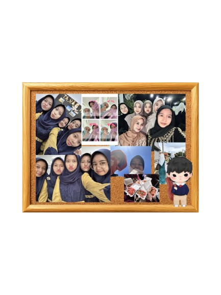

Selamat Datang!
Website ini merupakan media pendukung untuk menampilkan hasil Ujian Praktik Terintegrasi. Konten utama pada website ini adalah video broadcasting pembelajaran yang berisi penyampaian teks argumentasi secara lisan.
Tentang Website Ini
Website ini merupakan website portofolio digital yang berisi hasil karya dan pembelajaran saya selama mengikuti Ujian Praktik Terintegrasi.
Topik Argumentasi
(Topik yang dibahas dalam video ini adalah Peran Internship Curriculum dalam Pembentukan Entrepreneurship (Internship di Nisvara Bakery). Topik ini dipilih karena ingin menjelaskan bagaimana program internship di sekolah dapat memberikan pengalaman nyata kepada siswa dalam dunia kerja, serta membantu membentuk jiwa kewirausahaan, keterampilan, dan kesiapan menghadapi dunia kerja di masa depan.)
Harapan & Refleksi
("Setiap proses adalah pelajaran, dan setiap hasil adalah kenangan.")
